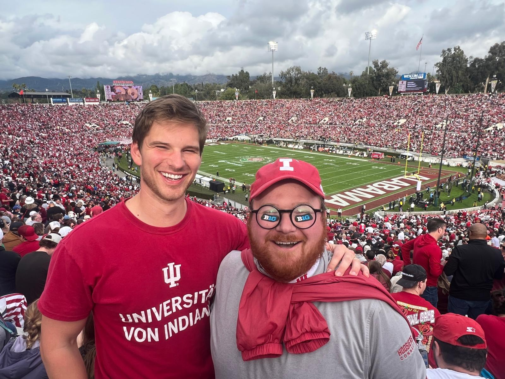
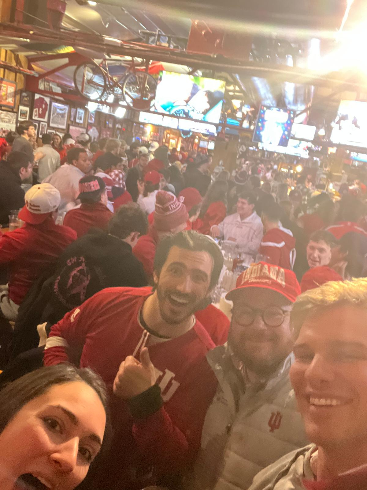

Other Thoughts
Random musings, ideas, and observations that don't really fit into my other pages. Usually off-the-cuff, hardly proof-read.
Random musings, ideas, and observations that don't really fit into my other pages. Usually off-the-cuff, hardly proof-read.
An observation from my accounting for consultants class...
When you receive KPIs, the first thing you should identify is if you can actually move these numbers. More importantly, your KPIs should only reflect things within your control, not affected by anything else.
Here's a quick, albeit drastic example: if there are three factory plants, and one closes, that causes the overhead cost of the other two plants to rise — if you are plant manager 2 or 3, someone else's problem affected your own own cost numbers, which directly damages your performance numbers, even if you didn't have any say in the matter
Perhaps a smart company would have a smarter costing method, but the general idea always remains the same — make sure what you are evaluated on is something only you control. Review that next time your compensation contract is tied to specific metrics.
"I've learned that people will forget what you said, people will forget what you did, but people will never forget how you made them feel."


I've always been afraid that NCAAM blue-blood IU would never hang another banner in basketball. Never in my life did I ever expect IUFB to win the college football championship.
Thank you Fernando Mendoza, Curt Cignetti, and the entire IU football team for giving me the most fun I've ever had watching football — and the most fun I'll ever have watching football in my life. My favorite team will ever go undefeated and win it all for the first time ever again.
I haven't seen either of my football teams lose for 9 weeks in a row. The Patriots last lost on Sept. 28th and Indiana Football hasn't lost since Dec. 20th of last year. I'll probably never have this run of football success ever again, so I'm just basking in the moment. Trying not to fly too close to the sun.
Here are some insights I learned from my first M&A class that I think are generally applicable in life and business:
With the rise of AI, we should probably lean away from take home problem sets and essays that students turn in and aren't responsible for again. My thought is that we should enter an "accountability" era in learning, where students create something then are responsible for that output.
For example, have a student write an essay (that, yes, can be ChatGPT-able) but then have them defend that essay or position in class. Start mini-dissertations earlier in a school career. In our tech strategy class, we used an AI to debate against us AHEAD of class, and then we defended our positions in class with other students. I liked this model of AI prep then real world discussion. I know you can't do this for every class (how do we defend points in math class...? do we have people defend their proofs?) but I think this is a possible model for the school future. Most importantly, it teaches students to be accountable for their work and to think critically about their own ideas. Accountability is a key skill in the real world, and critically thinking will prevent brain-rot that seems to be widespread with the rise of AI.